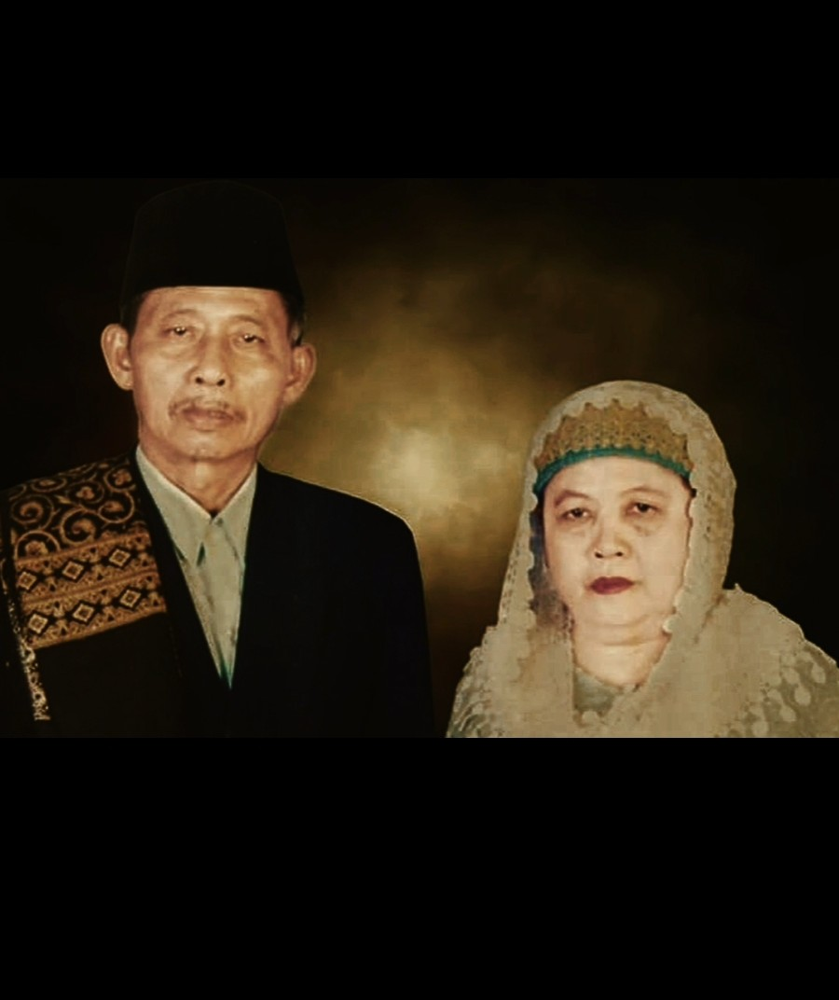
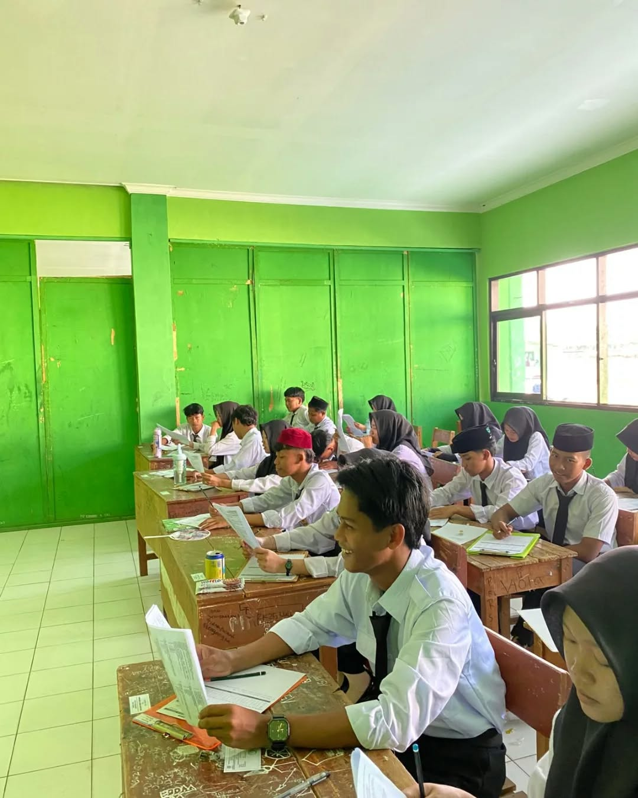

Tahfidz Al-Qur'an
Menghafal Al-Qur'an dengan bimbingan dan murojaah rutin.
Pondok Pesantren Arrozqiyah hadir sebagai tempat pendidikan Islam untuk membentuk generasi yang berilmu, berakhlak mulia, mandiri dan bermanfaat.

Pondok Pesantren Arrozaqiyah merupakan lembaga pendidikan Islam yang berkomitmen mendampingi santri dalam perjalanan menuntut ilmu, mendalami Al-Qur'an, membangun karakter, serta mengembangkan potensi diri.
Pendirian Pondok Pesantren yaitu KH.ABDUL ROZAQ BESERTA HJ.SITI MAEMUNAH didasari oleh kondisi empiris di wilayah Cibeber I, Kec. Leuwiliang, Kabupaten Bogor , di mana masih minimnya lembaga pendidikan Islam terpadu yang mampu memberikan akses pendidikan berkualitas dengan biaya terjangkau bagi masyarakat luas.
Berpijak dari pemikiran tersebut, pendirian Pondok Pesantren Arrozaqiyah dilatarbelakangi oleh keinginan kuat untuk turut serta mencetak generasi yang mutafaqqih fiddin (mendalami ilmu agama), berakhlak mulia, mandiri, serta siap menjawab tantangan zaman tanpa kehilangan akar tradisi keislaman yang moderat dan rahmatan lil 'alamin.
Program unggulan untuk membangun generasi berilmu dan berakhlak.
Menghafal Al-Qur'an dengan bimbingan dan murojaah rutin.
Memperbaiki bacaan Al-Qur'an sesuai kaidah tajwid.
Mempelajari aqidah, fiqih, akhlak, hadits dan sirah.
Meningkatkan wawasan, literasi, numerasi dan sains.
Mengembangkan kemampuan santri dari berbagai kitab yang di pelajari.
Olahraga, seni, organisasi, keterampilan dan kreativitas.
Aktivitas santri dalam keseharian yang teratur dan penuh makna.
Shalat malam dan persiapan Subuh.
Dzikir, tilawah dan setoran hafalan.
Piket kamar dan persiapan belajar.
Belajar mata pelajaran umum.
Shalat berjamaah, makan dan istirahat.
Shalat berjamah dan Kajian kitab.
Shalat berjamaah dan makan.
Murojaah, belajar mandiri dan istirahat.

Menambah kreativitas santri dalam seni musik Islam

Menjaga kesehatan dan sportivitas.

Meningkatkan wawasan dan kerja sama.

Meningkatkan Kerja Sama Tim.
Klik foto untuk melihat ukuran lebih besar.


Silakan lengkapi formulir pendaftaran. Data akan disusun menjadi pesan WhatsApp untuk panitia penerimaan santri baru.
01 — Isi formulir calon santri
02 — Konfirmasi kepada panitia
03 — Lengkapi persyaratan
04 — Ikuti proses seleksi
Silakan kunjungi lokasi Pondok Pesantren Arrozaqiyah untuk mengenal lingkungan pendidikan kami lebih dekat.
Alamat: Kp. Resmigalih RT/RW 001/009, Cibeber I, Kec. Leuwiliang, Kabupaten Bogor, Jawa Barat 16640
Untuk informasi pendaftaran dan pendidikan, silakan hubungi kami.